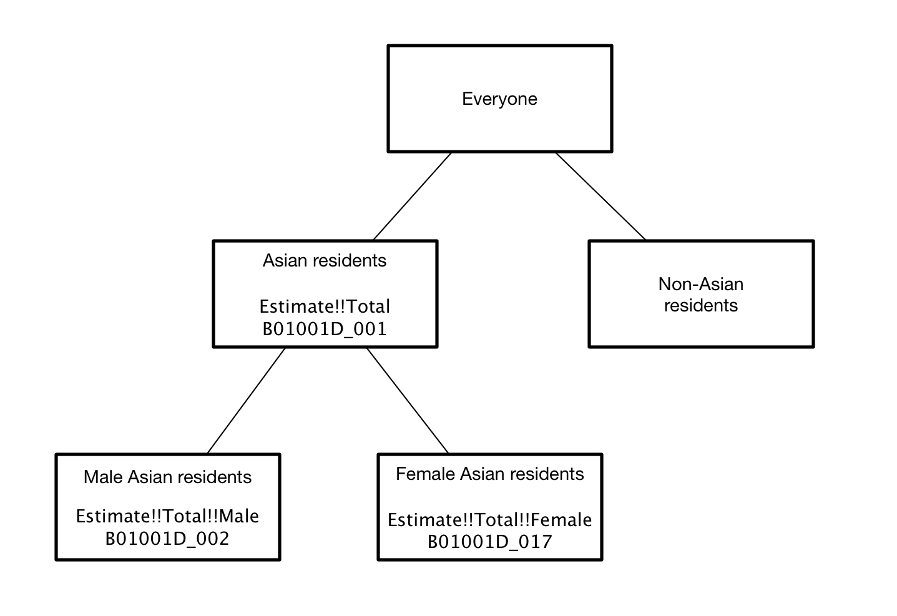
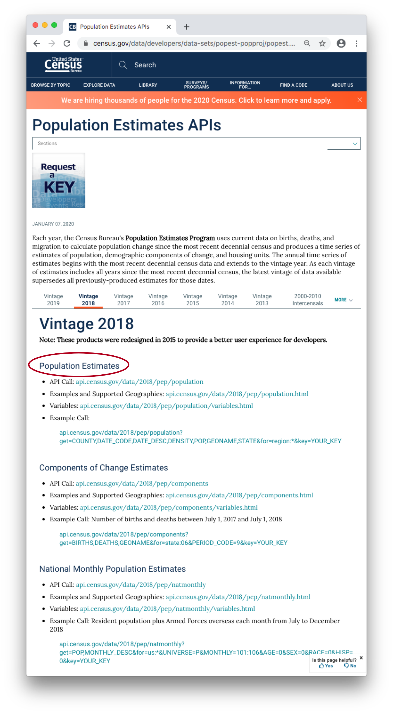
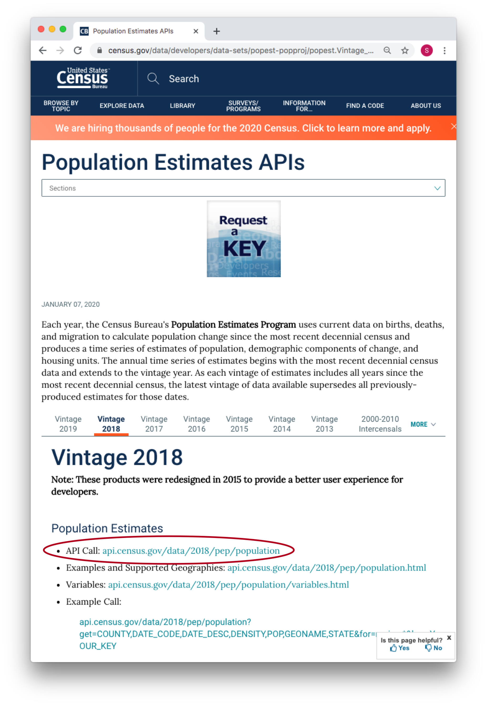
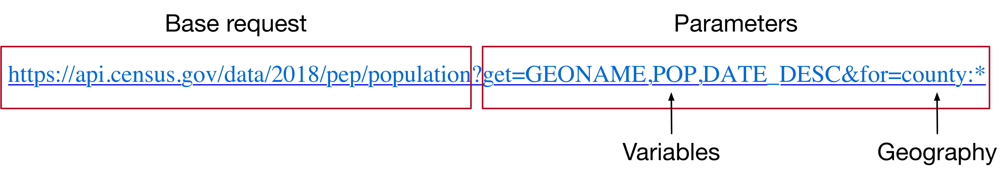
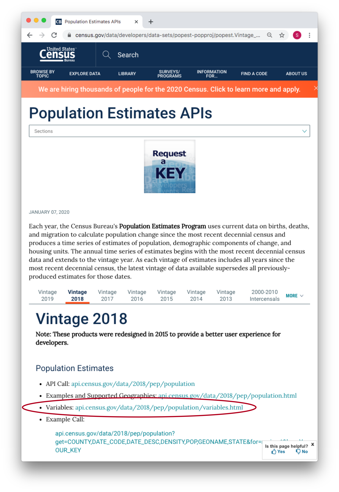
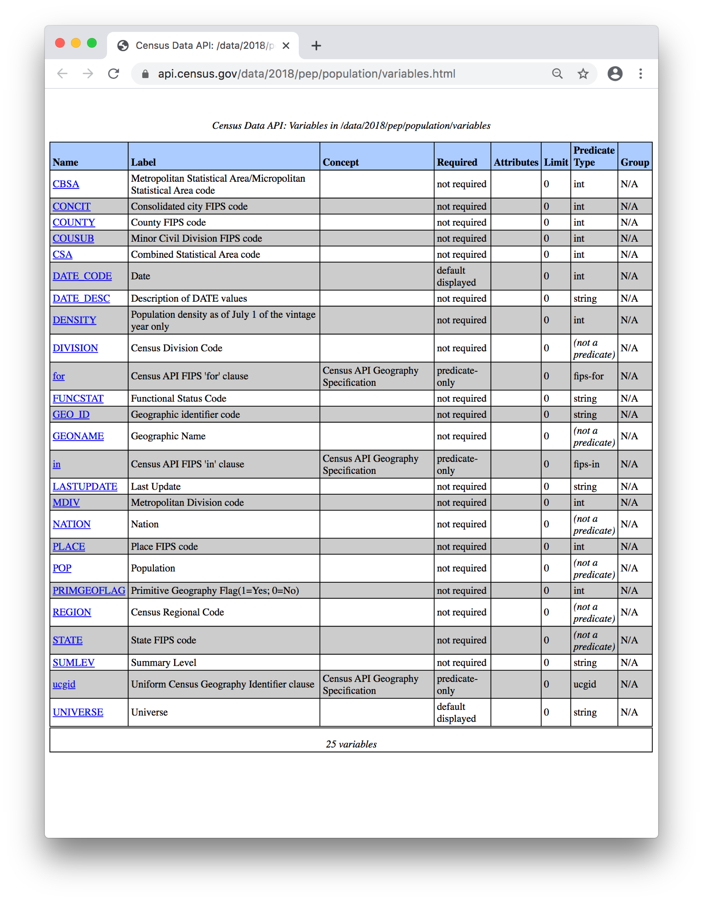
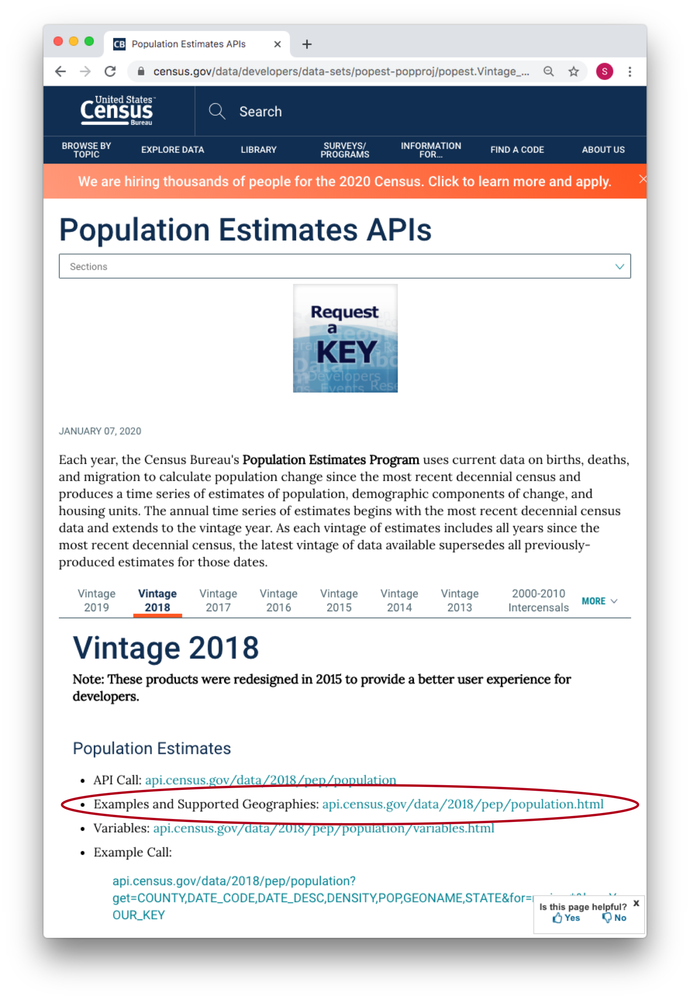
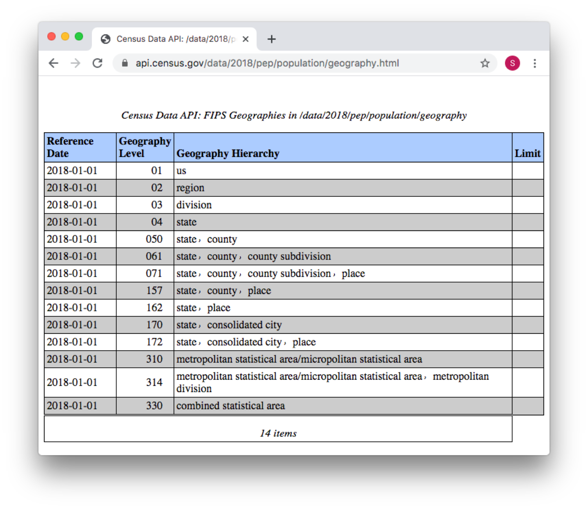

9 U.S. Census Bureau
library(tidyverse)
library(tidycensus)9.1 Census Bureau basics
The U.S. Census Bureau is a fantastic resource for data related to the U.S. population. As you saw in the API Basics chapter, the Census Bureau makes a wide variety of APIs available. In this chapter, we’ll focus on three: the decennial census, the American Community Survey, and the population estimates.
As we mentioned previously, many R packages wrap commonly used APIs, making it easier for you to obtain data. In this chapter, we’ll introduce one such package: tidycensus. We’ll show you how to use tidycensus to obtain data from the decennial census and American Community Survey. Then, we’ll go into more detail about working directly with the Census Bureau APIs.
First, we’ll give a bit of background about three U.S. Census data sources: the decennial census, the American Community Survey, and the population estimates.
9.1.1 Decennial census
When most people think of the U.S. Census, they’re thinking about the decennial census. The Census Bureau conducts the decennial census every ten years (starting in 1790), with the goal of determining the number of people living in the United States. Because many features of the U.S. government, including the number of representatives awarded to each state, depend on accurate population counts, the decennial census is required by the Constitution.
For the decennial census, the Census Bureau tries to survey every household in the U.S. in an attempt to count every U.S. resident. The population estimates that come from the decennial census are therefore the most definitive that you can find. However, decennial census data come out only every ten years, so can be out-of-date. The decennial census survey also only asks a few questions, primarily about household size, race, ethnicity.1 The American Community Survey provides more detailed and up-to-date data.
9.1.2 ACS
Between 1790 and 2000, decennial censuses included both a short form and a long form. Every household filled out the short form, but a sample also filled out the long form, which included additional questions. After 2000, the Census Bureau turned the long form into the American Community Survey (ACS), and began administering the ACS every year.
The ACS, unlike the decennial census, is a sample. Every year, the ACS surveys a representative sample consisting of 3.5 million households. The Census Bureau then uses this sample to provide estimates for the entire U.S. population.2
The ACS calculates these estimates over two time periods: 1 year and 5 years. The 1-year estimates are the most current, but have larger margins of error due to their smaller sample size. Most of the time, you’ll use the 5-year estimates. Their larger sample sizes gives them greater accuracy, particularly for smaller geographic units.
9.1.3 Population estimates
The third data source we’ll discuss comes from the Census Bureau’s Population Estimates Program (PEP). The decennial census publishes the definitive population of the United States every ten years. However, if you want to know the population of a U.S. geographic area between decennial census years, you’ll need to use the Population Estimates APIs.
The ACS also includes population estimates, but the estimation techniques used for the Population Estimates Program are more accurate.
9.1.4 Choosing data
The first step to working with U.S. Census data is to decide which data source to use. Here’s a quick guide:
ACS
Most of the time, you’ll want the ACS. The ACS includes many different variables on social, economic, housing, and demographic aspects.
You’ll typically want the 5-year ACS, unless you’re looking at a large or rapidly changing geographic area or need yearly data.
Decennial census
Use the decennial census if you want definitive population data, don’t need that many variables, and don’t mind that the data is only available every 10 years.
Population estimates
Use data from the Population Estimates Program if you want accurate population data for a non-decennial census year (i.e., a year not divisible by 10).
9.2 tidycensus
The tidycensus package wraps several U.S. Census Bureau APIs, allowing you to access decennial census and ACS data through R functions.
Before you use tidycensus for the first time, you’ll need to obtain a Census Bureau API key. You can request one here. You’ll receive an email with your key. Copy your key to the clipboard, then navigate back to RStudio. Run the following line to open your .Renviron file:
usethis::edit_r_environ()Then, add the following line, replacing YOUR_API_KEY with the key sent to you by the Census Bureau.
CENSUS_API_KEY=YOUR_API_KEYSave and close the file, and then restart R (Ctrl/Cmd + Shift + F10) for the changes to take effect.
From now on, you won’t need to worry about a key. Your key will stay in your .Renviron across R sessions.
9.2.1 Specify a dataset
We’ll show you how to use the tidycensus package to access two Census APIs: the decennial census and the ACS. Before you start using tidycensus, you’ll need to decide which dataset and year to use.
Dataset
See our discussion in Choosing data for the trade-off between the decennial census, ACS, and the different ACS estimates.
For many tidycensus functions, you specify the different surveys in the following way:
"acs5": 5-year ACS"acs1": 1-year ACS"sf1": Decennial census
sf stands for Summary File. Summary File 1 ("sf1") corresponds to the short form described earlier, while Summary File 3 ("sf3") corresponds to the long form. As explained earlier, the ACS took the place of the long form in 2001, so "sf3" is only available for censuses from 2000 or earlier.
Year
You’ll also need to decide on a year. For the decennial censuses, year will just be the year of the decennial census. Remember that the decennial census occurs in years ending in 0. The tidycensus package can access the 1990, 2000, and 2010 decennial censuses.
For ACS data, the year argument of tidycensus functions refers to the end-year of the sample period. For example, if you want to use a 5-year ACS that ended in 2019, set year = 2019. As of July 2021, tidycensus supports 5-year ACS end-years 2009 through 2019, and 1-year ACS end-years 2005 through 2019.
9.2.2 Find variables
Data from both the ACS and decennial census capture many variables. The 2010 decennial census includes 8,959, while the 2019 5-year ACS includes 27,040!
A code, like H001001 or P011014, identifies each of these variables. To use tidycensus, you’ll need to determine the codes of your variables of interest. We’ll use the function tidycensus::load_variables() to find ACS or decennial census variables and their accompanying codes.
load_variables() returns a tibble of all variable codes from a given dataset, alongside brief descriptions. We’ll load the variables from the 2019 5-year ACS as an example.
all_vars_acs5 <-
load_variables(year = 2019, dataset = "acs5")
all_vars_acs5
#> # A tibble: 27,040 × 3
#> name label concept
#> <chr> <chr> <chr>
#> 1 B01001_001 Estimate!!Total: SEX BY AGE
#> 2 B01001_002 Estimate!!Total:!!Male: SEX BY AGE
#> 3 B01001_003 Estimate!!Total:!!Male:!!Under 5 years SEX BY AGE
#> 4 B01001_004 Estimate!!Total:!!Male:!!5 to 9 years SEX BY AGE
#> 5 B01001_005 Estimate!!Total:!!Male:!!10 to 14 years SEX BY AGE
#> 6 B01001_006 Estimate!!Total:!!Male:!!15 to 17 years SEX BY AGE
#> # … with 27,034 more rowsload_variables() returns a tibble with the three variables:
name: The variable code.label: A description of the variable.concept: A broader categorization.
Let’s take a closer look at just one concept: sex by age.
all_vars_acs5 %>%
filter(concept == "SEX BY AGE")
#> # A tibble: 49 × 3
#> name label concept
#> <chr> <chr> <chr>
#> 1 B01001_001 Estimate!!Total: SEX BY AGE
#> 2 B01001_002 Estimate!!Total:!!Male: SEX BY AGE
#> 3 B01001_003 Estimate!!Total:!!Male:!!Under 5 years SEX BY AGE
#> 4 B01001_004 Estimate!!Total:!!Male:!!5 to 9 years SEX BY AGE
#> 5 B01001_005 Estimate!!Total:!!Male:!!10 to 14 years SEX BY AGE
#> 6 B01001_006 Estimate!!Total:!!Male:!!15 to 17 years SEX BY AGE
#> # … with 43 more rows49 variables belong to the “SEX BY AGE” concept. Each row refers to a variable under that concept.
This way of thinking about variables can be a bit confusing at first. The Estimate!!Total variable captures the number of people for whom sex by age data is available. Estimate!!Total!!Male captures the total number of males, while Estimate!!Total!!Male!!Under 5 years captures the total number of males under 5 years old.
This is a bit more intuitive for concepts like "SEX BY AGE (ASIAN ALONE)".
all_vars_acs5 %>%
filter(concept == "SEX BY AGE (ASIAN ALONE)")
#> # A tibble: 31 × 3
#> name label concept
#> <chr> <chr> <chr>
#> 1 B01001D_001 Estimate!!Total: SEX BY AGE (ASIAN ALONE)
#> 2 B01001D_002 Estimate!!Total:!!Male: SEX BY AGE (ASIAN ALONE)
#> 3 B01001D_003 Estimate!!Total:!!Male:!!Under 5 years SEX BY AGE (ASIAN ALONE)
#> 4 B01001D_004 Estimate!!Total:!!Male:!!5 to 9 years SEX BY AGE (ASIAN ALONE)
#> 5 B01001D_005 Estimate!!Total:!!Male:!!10 to 14 years SEX BY AGE (ASIAN ALONE)
#> 6 B01001D_006 Estimate!!Total:!!Male:!!15 to 17 years SEX BY AGE (ASIAN ALONE)
#> # … with 25 more rowsHere, Estimate!!Total represents the total number of Asian U.S. residents for whom sex/age data is relevant.

Most concepts have a Estimate!!Total variable, or something similar. If you want to calculate a proportion, such as the proportion of males, use the relevant Estimate!!Total as the denominator.
To find the variables you want, pipe the result of load_variables() into view().
all_vars_acs5 %>%
view()You can use the search bar to search for variables with a given a keyword (e.g., “income”). You can also click on the Filter button to get a search bar for each variable. Once you’ve found the variables you want, copy their codes (the name variable), and store them in a named vector.
vars_acs5 <-
c(
median_income = "B06011_001",
median_rent = "B25064_001"
)If we wanted to get variables from, say the 2010 decennial census, we’d use
load_variables(year = 2010, dataset = "sf1") %>%
view()The documentation for the ACS is helpful if you need additional information about ACS variables.
9.2.3 Get data
tidycensus provides the functions get_acs() and get_decennial() to get Census Bureau ACS and decennial data. At minimum, you should supply these functions with three variables:
geographyvariablesyear
geography controls the geographic level of the data returned. The tidycensus website includes a helpful table of all available geographies. Common values are “state” and “county.”
Supply variables with a vector of variable codes. Earlier, we stored the codes of some variables in the vector vars_acs5.
vars_acs5
#> median_income median_rent
#> "B06011_001" "B25064_001"For get_acs(), year indicates the end-year for the ACS estimates. If you want ACS estimates from 2015-2019, set year = 2019. By default, get_acs() uses the 5-year estimates. You can use other estimates by specifying survey.
df_acs <-
get_acs(
geography = "state",
variables = vars_acs5,
year = 2019
)
#> Getting data from the 2015-2019 5-year ACS
df_acs
#> # A tibble: 104 × 5
#> GEOID NAME variable estimate moe
#> <chr> <chr> <chr> <dbl> <dbl>
#> 1 01 Alabama median_income 26231 139
#> 2 01 Alabama median_rent 792 5
#> 3 02 Alaska median_income 34018 452
#> 4 02 Alaska median_rent 1244 13
#> 5 04 Arizona median_income 30216 88
#> 6 04 Arizona median_rent 1052 4
#> # … with 98 more rowsget_acs() will return the estimate and margin of error (moe) for each variable. Because the ACS values are estimates, the Census Bureau calculates a margin of error for most variables.
To pivot the data into a wider format, we can use pivot_wider().
df_acs %>%
pivot_wider(
names_from = variable,
values_from = c(estimate, moe)
)
#> # A tibble: 52 × 6
#> GEOID NAME estimate_median… estimate_median… moe_median_inco… moe_median_rent
#> <chr> <chr> <dbl> <dbl> <dbl> <dbl>
#> 1 01 Alabama 26231 792 139 5
#> 2 02 Alaska 34018 1244 452 13
#> 3 04 Arizona 30216 1052 88 4
#> 4 05 Arkansas 25758 745 139 4
#> 5 06 California 31960 1503 65 4
#> 6 08 Colorado 35887 1271 175 6
#> # … with 46 more rowsget_decennial() works similarly. First, we’ll find the variables with load_variables() and store several in a vector.
load_variables(year = 2010, dataset = "sf1") %>%
view()vars_decennial <-
c(
pop_urban = "H002002",
pop_rural = "H002005"
)Then, we’ll use get_decennial() to access the data. This time, we’ll get the data at the county level. Here, year is the year of the decennial census.
df_decennial <-
get_decennial(
geography = "county",
variables = vars_decennial,
year = 2010
)
#> Getting data from the 2010 decennial Census
#> Using Census Summary File 1
df_decennial
#> # A tibble: 6,442 × 4
#> GEOID NAME variable value
#> <chr> <chr> <chr> <dbl>
#> 1 05131 Sebastian County, Arkansas pop_urban 43495
#> 2 05133 Sevier County, Arkansas pop_urban 2115
#> 3 05135 Sharp County, Arkansas pop_urban 2177
#> 4 05137 Stone County, Arkansas pop_urban 0
#> 5 05139 Union County, Arkansas pop_urban 8830
#> 6 05141 Van Buren County, Arkansas pop_urban 0
#> # … with 6,436 more rowsAgain, we can use pivot_wider().
df_decennial %>%
pivot_wider(names_from = variable, values_from = value)
#> # A tibble: 3,221 × 4
#> GEOID NAME pop_urban pop_rural
#> <chr> <chr> <dbl> <dbl>
#> 1 05131 Sebastian County, Arkansas 43495 11156
#> 2 05133 Sevier County, Arkansas 2115 4772
#> 3 05135 Sharp County, Arkansas 2177 7645
#> 4 05137 Stone County, Arkansas 0 6712
#> 5 05139 Union County, Arkansas 8830 10823
#> 6 05141 Van Buren County, Arkansas 0 10345
#> # … with 3,215 more rowsNow, you can use your data however you wish. Note that, if you’re interested in geospatial aspects of ACS or decennial census data, we recommend using our ussf package for boundaries. You can install the package with the following command.
remotes::install_github("dcl-docs/ussf")You can join your ACS or decennial census data with the result of ussf::boundaries(), using GEOID as a unique identifier.
df_acs %>%
left_join(
ussf::boundaries(geography = "state") %>% select(GEOID),
by = "GEOID"
)
#> old-style crs object detected; please recreate object with a recent sf::st_crs()
#> # A tibble: 104 × 6
#> GEOID NAME variable estimate moe geometry
#> <chr> <chr> <chr> <dbl> <dbl> <MULTIPOLYGON [m]>
#> 1 01 Alabama median_income 26231 139 (((708460 -598743, 708114 -594376,…
#> 2 01 Alabama median_rent 792 5 (((708460 -598743, 708114 -594376,…
#> 3 02 Alaska median_income 34018 452 (((-1518019 -1148523, -1516049 -11…
#> 4 02 Alaska median_rent 1244 13 (((-1518019 -1148523, -1516049 -11…
#> 5 04 Arizona median_income 30216 88 (((-1743454 -375819, -1743828 -373…
#> 6 04 Arizona median_rent 1052 4 (((-1743454 -375819, -1743828 -373…
#> # … with 98 more rowsYou can make makes with this data using ggplot2 and geom_sf().
9.3 Population estimates
For population estimates outside decennial census years, you’ll need to work directly with the Population Estimates APIs.
In the API Basics chapter, we discussed a workflow for working directly with APIs, and walked you through an example that used the Population Estimates. In this section, we’ll dive into more detail about the Population Estimates APIs.
9.3.1 Choose data
There are two types of population estimate APIs: the vintages and the intercensals. Each vintage contains data on all years since the last decennial census. For example, the 2018 Vintage contains data for each year between 2010 and 2018. You should use the most recent vintage available, since the Census Bureau updates all previous years’ estimates.
The intercensals contain data between previous decennial census. For example, the 2000-2010 intercensal contains yearly data for 2000 through 2010. If you want data from, for example, 2000 to 2018, you’ll need to use both a vintage and an intercensal, which will involve two API queries.
As of February 2020, the Vintage 2018 estimates are the most recent, fully available estimates. Vintage 2019 estimates are available for some geographic units, but won’t be available at the county level until March 2020.
Once you’ve decided on a vintage or a intercensal, click on the corresponding tab. You’ll see the various available APIs for those estimates.
The links under the API name provide you with more information about the API. If you want population data, you’ll probably want the Population Estimates API, which provides yearly population estimates at various geographic levels.

9.3.2 Craft your request
In the Census Basics chapter, we laid out the steps for working with an API. After finding your API, the next step is to craft the request.
First, you’ll need to find the base request, which will be listed next to API Call.

Next, add parameters to the base request to specify exactly what data you want. For the Population Estimates APIs, there are two important parameters: get and for. (You’ll also see key in the examples on the Census website, but an API key isn’t actually necessary.)

get controls which variables (i.e., what will eventually become your tibble columns) the request returns. for controls the geographic level. The parameters come after a ? and are separated by a &. We’ll go over both in more detail next.
Variables
To see all possible variables, click on the Variables link under your chosen API.

This will lead you to a table of variables.

The variables in all caps, like POP and GEONAME, are the names of variables returned by the API. The variables in lowercase, like for and in, are actually API request parameters. For now, just pay attention to the uppercase variables. You’ll specify the names of your desired variable after the API parameter get.
Often, you’ll want to get population over time. To get data for each year, you’ll need the variables DATE_DESC and DATE_CODE. DATE_CODE is a code associated with a date (e.g., 1 or 2), and DATE_DESC describes the date (e.g., "7/1/2018 population estimate"). Without DATE_DESC, you won’t know what each DATE_CODE refers to, and without DATE_CODE, the API only returns data for one year.
Geographies
Next, you’ll need to specify what geographic level of the data. For each Population Estimate API, check which geographies are available by clicking on the Examples and Supported Geographies link.

This link leads to a table with a description of the API, and links to examples, geographies, and other information. Click on the geographies link. Then, you’ll see a table with different geographies.

Use these geographies to determine the data returned. For example:
for=uswill return data for the entire U.S.for=state:30will return data for Montana.for=state:*will return data by state, for all states.for=county:*will return data by county, for all counties in the U.S.for=county:*&in=state:30will return data by county, just for Montana.
9.3.2.1 Examples
Each API has an examples page. From the Population Estimates homepage, navigate to Examples and Supported Geographies > Examples. This page lists examples for the 2018 Vintage Population Estimates API.
Here are some more examples:
Entire U.S. population data by year
https://api.census.gov/data/2018/pep/population?get=GEONAME,DATE_CODE,DATE_DESC,POP&for=us
Population data for only Montana, by year
https://api.census.gov/data/2018/pep/population?get=GEONAME,DATE_CODE,DATE_DESC,POP&for=state:30
Population data for all counties, by year
https://api.census.gov/data/2018/pep/population?get=GEONAME,DATE_CODE,DATE_DESC,POP&for=county:*
9.3.3 Read the data into R
The next step is to read your data into R. We’ll use the same process introduced in API Basics. Let’s use a request that gets population data for all states, by year.
request <-
"https://api.census.gov/data/2018/pep/population?get=GEONAME,DATE_CODE,DATE_DESC,POP&for=state:*"
response <-
request %>%
jsonlite::fromJSON() %>%
as_tibble() %>%
janitor::row_to_names(row_number = 1)
response
#> # A tibble: 572 × 5
#> GEONAME DATE_CODE DATE_DESC POP state
#> <chr> <chr> <chr> <chr> <chr>
#> 1 Alabama 1 4/1/2010 Census population 4779736 01
#> 2 Alabama 2 4/1/2010 population estimates base 4780138 01
#> 3 Alabama 3 7/1/2010 population estimate 4785448 01
#> 4 Alabama 4 7/1/2011 population estimate 4798834 01
#> 5 Alabama 5 7/1/2012 population estimate 4815564 01
#> 6 Alabama 6 7/1/2013 population estimate 4830460 01
#> # … with 566 more rowsYou’ll still need to do a bit of light cleaning. Also, notice that there are three different estimates for 2010 (the decennial census year).
response %>%
distinct(DATE_DESC) %>%
pull(DATE_DESC)
#> [1] "4/1/2010 Census population" "4/1/2010 population estimates base"
#> [3] "7/1/2010 population estimate" "7/1/2011 population estimate"
#> [5] "7/1/2012 population estimate" "7/1/2013 population estimate"
#> [7] "7/1/2014 population estimate" "7/1/2015 population estimate"
#> [9] "7/1/2016 population estimate" "7/1/2017 population estimate"
#> [11] "7/1/2018 population estimate"You’ll generally want to use all the July 1st estimates so that all estimates are a year apart.
9.4 To learn more
A good source to go deeper into working with census data is Walker, Analyzing US Census Data: Methods, Maps, and Models in R.
U.S. Census Bureau. Questionnaires. https://www.census.gov/history/www/through_the_decades/questionnaires/↩︎
U.S. Census Bureau. American Community Survey: Information Guide. https://www.census.gov/content/dam/Census/programs-surveys/acs/about/ACS_Information_Guide.pdf↩︎